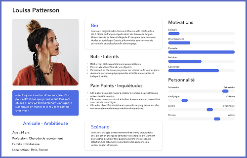
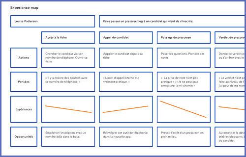
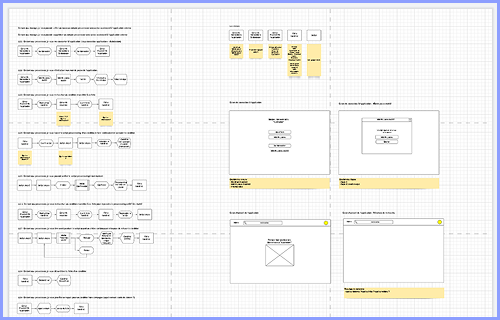
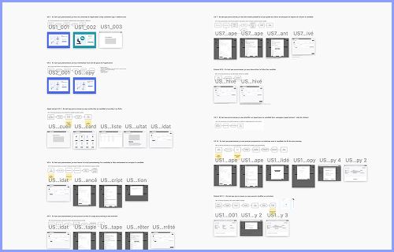
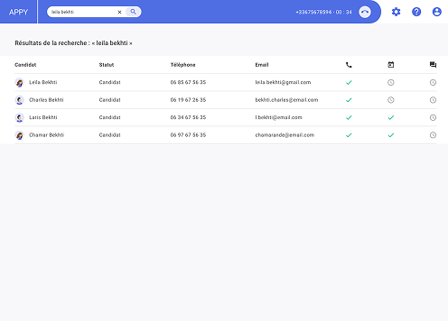
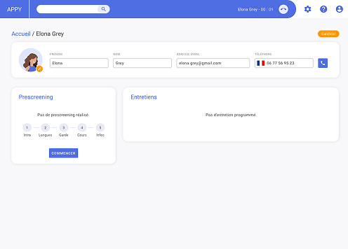
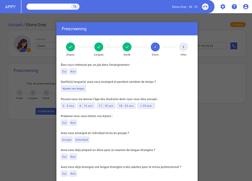
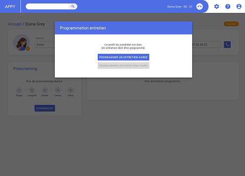
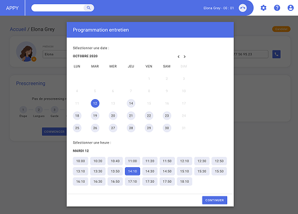
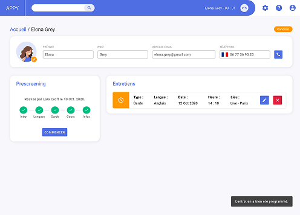

Contexte & Objectifs
Chez Mômji, le quotidien des recruteurs consiste à évaluer des babysitters sur leurs compétences et leurs savoir être. Pour réaliser ce travail, ils utilisent un CRM développé en interne qui, d'après eux, montre des limites. La dette technique du CRM ne permettant pas d'évolution rapide, la décision a été prise de construire un outil dédié plutôt que de le refondre.
Permettre aux recruteurs de réaliser toutes leurs tâches quotidiennes en un seul endroit
Augmenter la facilité et la rapidité avec lesquelles les recruteurs réalisent leurs tâches
Réduire le risque d'erreur d'appréciation des candidats par les recruteurs
Discovery
Audit UX
J'ai réalisé un audit UX du CRM utilisé par les recruteurs, basé sur les critères heuristiques de Bastien et Scapin :
Entretiens
J'ai mené 5 entretiens semi-directifs avec des recruteurs, on a abordé leur travail quotidien :
À partir des 5 entretiens réalisés, j'ai construit un persona principal et son experience map pour modéliser les frictions rencontrées par un recruteur.
Persona

Le pain point sur l'évaluation des compétences du candidat nous a orienté vers une solution qui aide à l'évaluation.
Experience map

Le point de rupture le plus important est la planification de l'entretien, nous l'avons donc inclu dans les must have du projet.
Décisions clés
Suite à la discovery, nous avons pris certaines décisions clés :
Idéation
How might we
Afin de réfléchir à des solutions, nous nous sommes basés sur des énoncés "How might we" :
Features
Puis, nous avons priorisés les fonctionnalités que nous voulions retrouver dans le nouvel outil :
- Chercher la fiche candidat
- Accéder à la fiche candidat
- Lancer un prescreen par téléphone
- Valider / Invalider le candidat
- Programmer un entretien
- Invalider automatiquement le candidat selon certaines conditions
- Programmer un entretien automatiquement à la fin du prescreen
- Lancer un prescreen par vidéo
Design
J'ai matérialisé les user flows puis un prototype mid-fidelity qui m'a permis de faire tester l'interface aux recruteurs.
User flows

Prototype mid-fidelity

User tests
Les tests nous ont permis de rectifier certains points, dont voici quelques exemples :
Décisions clés
Les résultats des tests ont directement orienté trois décisions structurantes pour la version finale :
Prototype high-fidelity

La liste de résultat permet de voir rapidement si le prescreen a été fait, si l'entretien est programmé et si il a été fait.

La fiche permet de voir les infos du candidat, l'état du prescreen avec les étapes et les entretiens par statut.

Le script du prescreen s'ouvre depuis la fiche et guide le recruteur via cinq étapes avec un ordre logique.

Le système détecte automatiquement si le candidat peut continuer le processus de recrutement interne.

Il est possible de planifier les entretiens directement dans l'outil, les créneaux et les horaires apparaissent si dispo.

La fiche propose un récapitulatif de l'avancement du prescreen, ainsi que les entretiens passés, à faire, etc.
Livraison et évaluation
Le projet a été conçu et prototypé jusqu'à une version high-fidelity testée par les recruteurs. Les indicateurs ci-dessous correspondent aux objectifs de performance définis avec l'équipe pour mesurer le succès du futur déploiement.
un parcours découpé et guidé, là où l'ancien CRM n'offrait aucune structure
des tâches du recrutement réunies dans une interface unique et responsive
sur les tâches obligatoires, sécurisées par des garde-fous à l'enregistrement
Les difficultés rencontrées
Côté conception, équilibrer l'automatisation (refus automatique) et le contrôle laissé au recruteur a demandé plusieurs itérations pour éviter un sentiment de perte de maîtrise.
Enfin, concevoir un outil multilingue dès le départ, pour les recruteurs non francophones, a imposé des contraintes de structure et de longueur de contenu à anticiper très tôt.